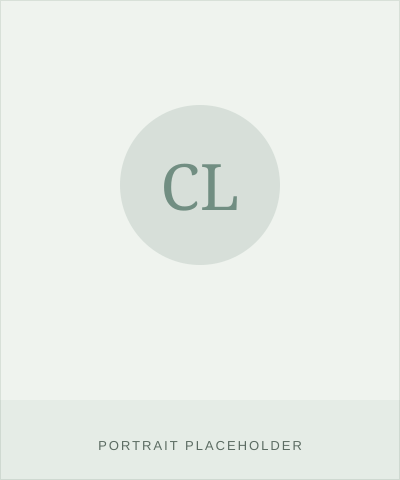

Disce is built by a founding team spanning learning psychology, intercultural strategy, marketing and operations, and business development — currently preparing for incorporation as a UG (haftungsbeschränkt) with a path to GmbH.
B.Sc. Psychology (HMU Potsdam); M.Sc. Business Psychology (ongoing, BSP Berlin); M.Sc. Media Psychology (planned). Currently leads a pilot RCT (N=150) on AI-generated feedback effectiveness. Background in user research, data preparation, and knowledge management; technical expertise in Python, NLP, LLM integration, and RAG systems. Responsible for product conception, the learning-psychology framework, study design, and business-model development.

B.A. Japanese & Chinese Studies (Tübingen); Master's in Library Science (NCHU, Taiwan); trained FaMI. Ten years abroad — five in Taiwan, five in Japan — including five years as a sales engineer at Izawa Technol Laboratory. Currently a librarian at Medical School Berlin. Fluent in English, Chinese, and Japanese at B2–C2. Responsible for language didactics, content development, cultural adaptation, and intercultural quality assurance.
B.A. Political Science & German (UW–Eau Claire, USA); M.A. National and International Administration (University of Potsdam); M.A. Political Science (ongoing). Data Science & ML Certificate (MIT, 2025). Junior Associate & Project Manager at StromGold Consulting. Native English speaker, German C1. Responsible for marketing, sales, and operational processes.
M.A. International Business (UNITEC, Honduras); MBA in progress (UE Applied Sciences; thesis on AI and Big Data in air freight). Four-plus years in B2B sales, sales operations, and client management across Inversiones Disfruta, Allied Global, and ResultsCX. Native Spanish speaker, English C2, German A1 — bringing a direct user perspective as a beginning learner. Responsible for sales operations, B2B pipeline development, and client acquisition.
Placeholder entry. Joscha's role, surname, and biography were not present in the current business documentation and should be supplied for the next revision of this page.
Technical architecture, engineering, and data protection. Our largest open staffing need, actively being recruited.
Our largest open staffing need: technical architecture, engineering, and workload management, with responsibility for data protection given that the product processes personal voice data. Actively being recruited — reach out via the contact link below.
 DISCE
DISCE